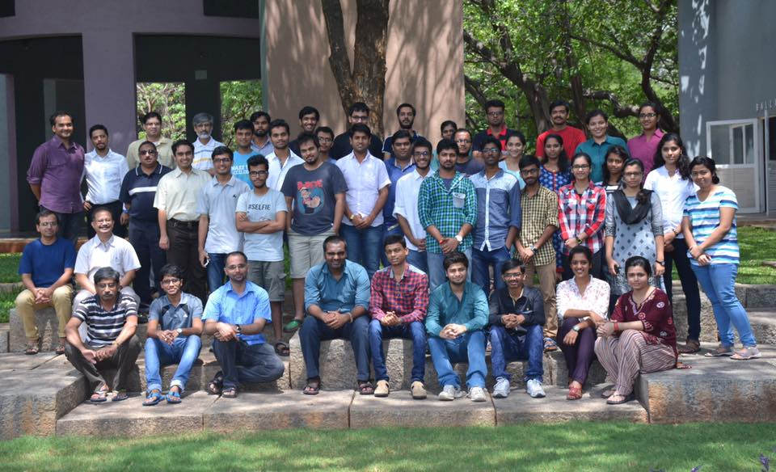
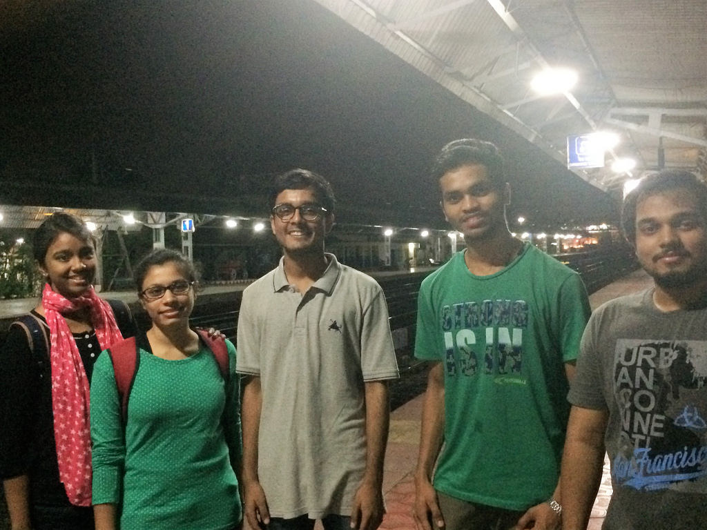
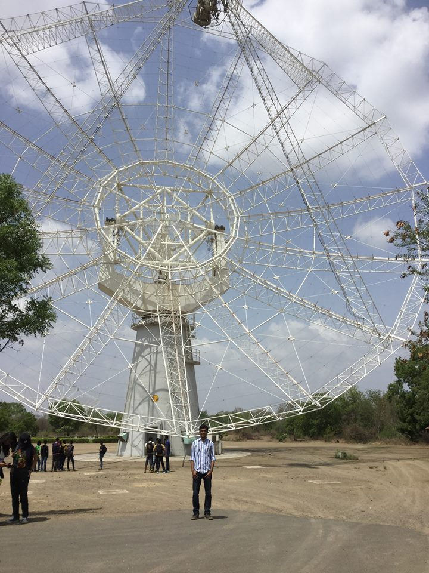
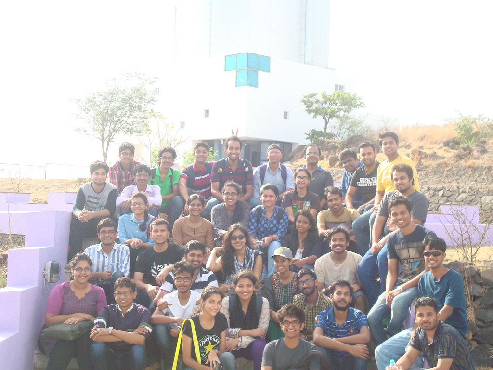
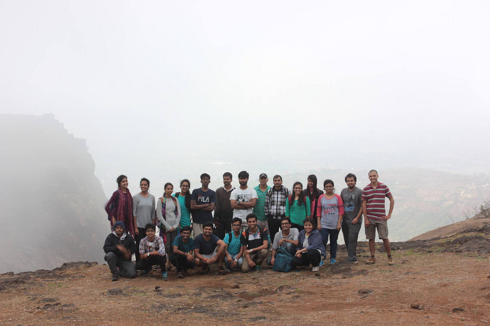

IUCAA Summer School 2016
Posted on October 10, 2016
1 - About The Programme
I was selected for the Introductory Summer School Program on Astronomy and Astrophysics (ISSAA 2016) which was held from 15th May to 17th June, 2016 and was organized by the Inter University Centre for Astronomy & Astrophysics (IUCAA), Pune.
The programme spanned over a period of five weeks and consisted of a core set of theory lectures followed by experimental sessions that focused on various techniques of studying the universe. I was among 35 students selected from various colleges across India, from a pool of around 700+ applicants. The whole program was funded by IUCAA, which meant free hospitality (including stay, food and field visits) and that Travel Allowances (TA) was provided. So, now that the premise set, we can now dig a little deeper!
2 - Reaching IUCAA
I reached IUCAA five days late, since our Term End Exams clashed with the programme dates.
The experience enthralled me from the very first day. I was provided accommodation in the IUCAA Guest House along with the other participants. The food was provided by the IUCAA Canteen, ‘Ballava’. The best part about it was that all the PhD scholars and faculty members - including hardcore Astrophysicists - came for their meals to the same place.
This gave us the great opportunity of being able to interact freely with them and make life-long connections over amusing dinner table conversations. And yeah, the food was great too!
3 - Lectures and Experimental Sessions
This indeed was the best and the most exciting part. The lectures covered topics from the very basics, like Optical Astronomy, Fluids, Plasma and General Relativity offered by the globally renowned theoretical physicist and cosmologist, Padma Shri Prof. Thanu Padmanabhan. His lectures were engaging and rejuvenated our curious minds. Galaxies, Cosmology at a Large Scale and Galactic Dynamics-based lectures were pretty challenging and left us more confused than ever about the mysterious nature of the universe. The part that really interested me was the one that involved studying the Cosmos in the Electromagnetic Spectrum. The lectures of Caltech Postgraduate Prof. Varun Bhalerao were really powerful. He covered X Ray Astronomy using space-based observatories like NASA’s Chandra and recently launched multi wavelength satellite ASTROSAT. He talked in depth about how engineers at IUCAA worked to build the SXT (Soft X-Ray Imaging Telescope).
The most coveted topic during my stay at IUCAA was the study of Gravitational Waves. A team of scientists and PhD students at IUCAA is working in tandem with Caltech & MIT’s LIGO Hanford Observatory. They shared their experiences with us and what work they were contributing to in this cutting edge field, which is being touted by many as the biggest discovery in 21st Century.
Experimental Sessions dealt with playing around with Radio Telescopes and programming in Python. We were taught how numerical methods and python are employed to carry out interesting simulations of the universe. We did mini projects that involved handling data from the Cosmic Microwave Background and Sloan Digital Sky Survey(SDSS). Also, not to forget we had regular night sky watching / star gazing sessions too!
4 - Field Trip to GMRT and IGO
We also got the opportunity to visit the Giant Metrewave Radio Telescope at Khodad which is operated by National Centre for Radio Astrophysics (NCRA).
It is amongst the largest interferometric arrays in the world and is used to study the Galaxy, Supernovae, the Sun and their various phenomenon like solar winds. We also visited IUCAA’s Girawali Observatory which houses a two Meter Optical telescope. We studied about the engineering feats achieved in building such a sensitive and precise instrument at the top of a mountain.
5 - Fun and Night Trek to Visapur Fort
The environment at IUCAA was really cheerful and fun-filled. We could wear shorts to lecture halls and the library was open all night.
The PhD Students have a tradition of throwing a party for the Summer School students. It's that one night where you get to socialize and feast on great food.
They also organized a Night Trek to Visapur Fort, which lies on the outskirts of Pune City. It was one hell of an experience. We spent all night climbing up the fortress and as a reward the next morning, we got to see the sunrise from the hilltop.
Overall, the Summer School was a life-altering experience for me. It provided me the right exposure at just the right time.
The above post was also published on VIT Yearbook Magazine. The link for that post is below: “Click here to see the article.”